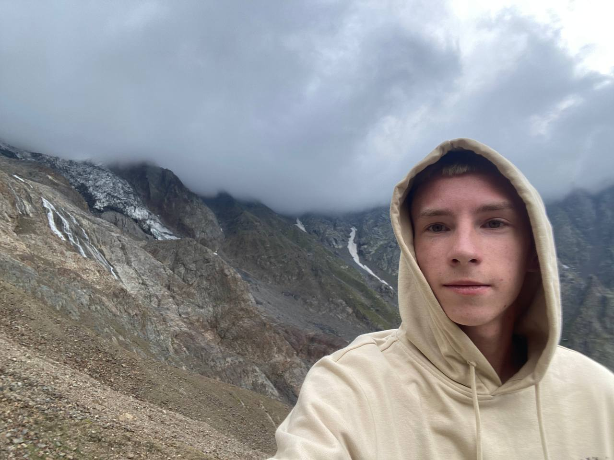
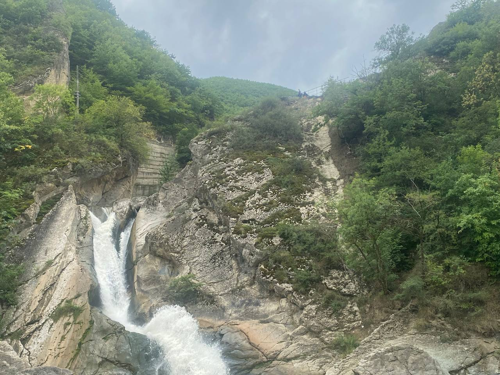
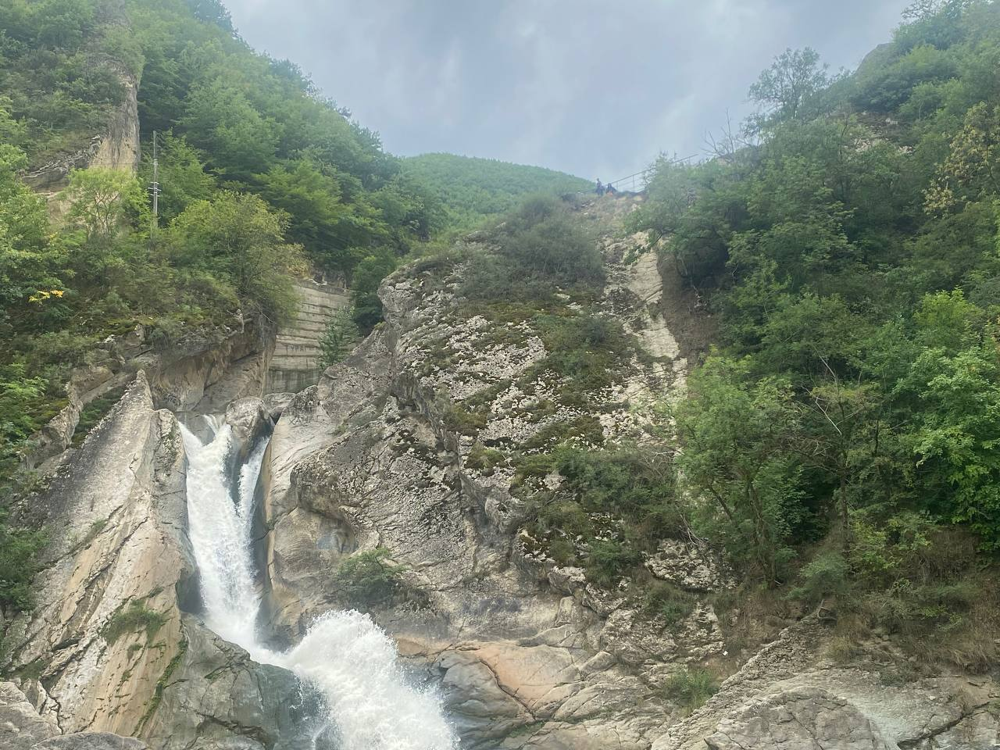
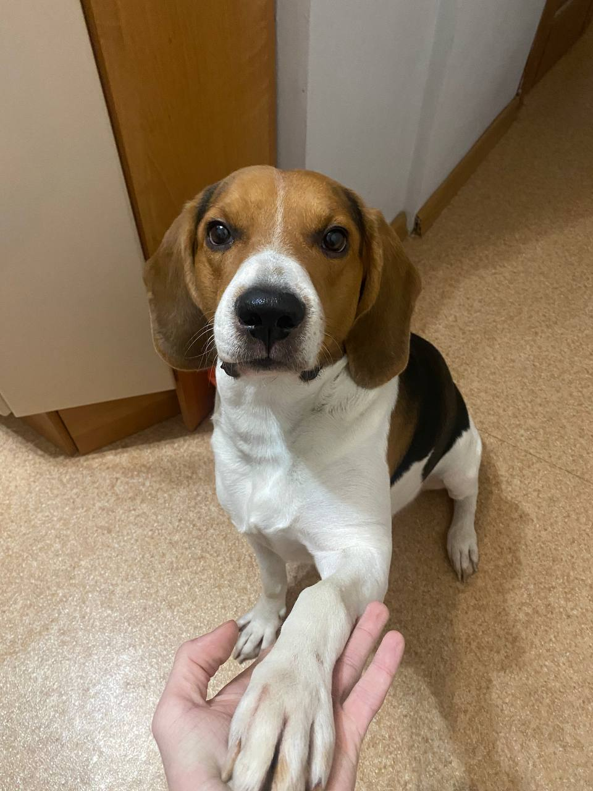
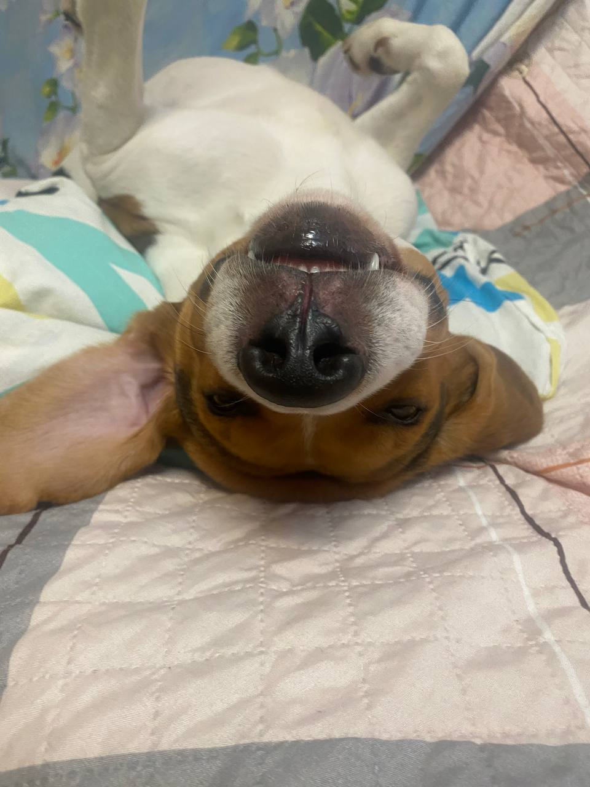
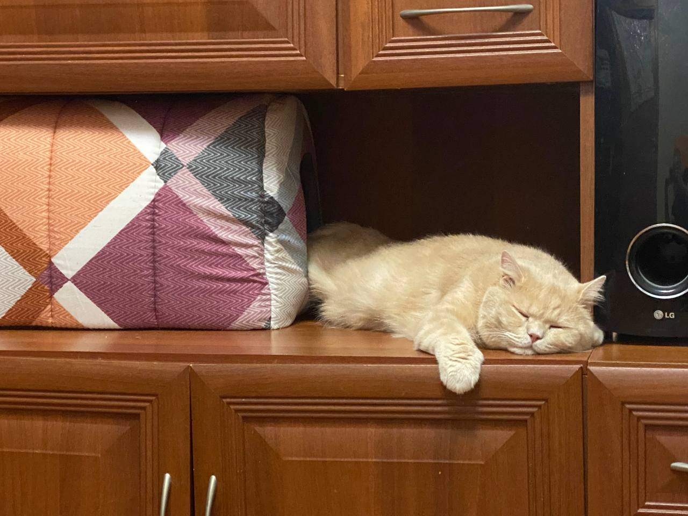
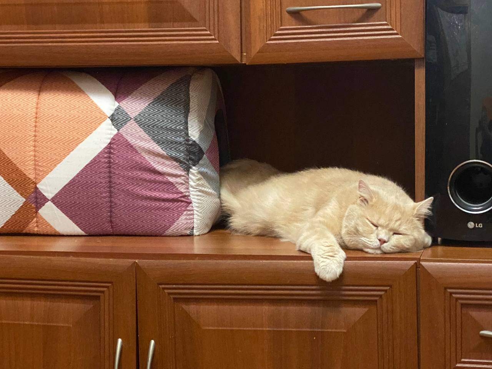
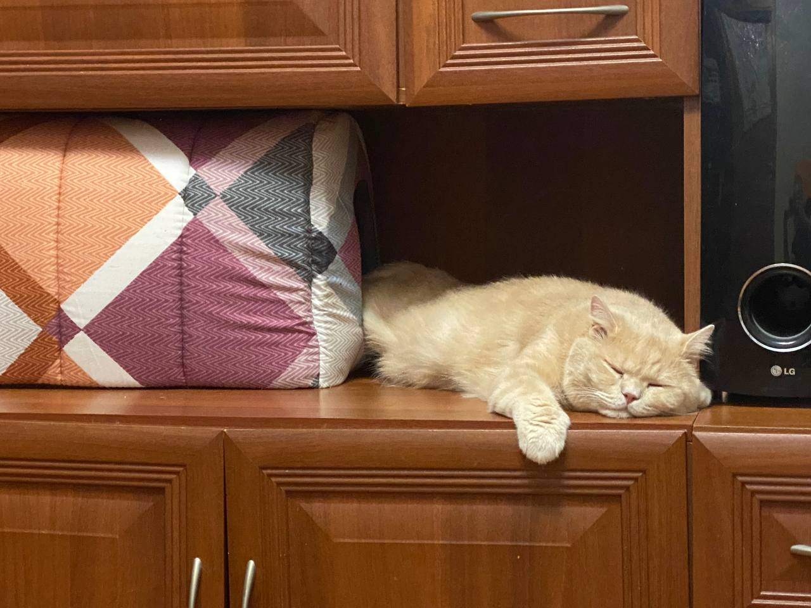

Хорев Кирилл Александрович
Дата рождения: 28 сентября 2006 г.
Любимые увлечения: тхэквондо, велик, путешествия, начинающий тренер.
Hard-скилы: Python, C++, Linux.
Soft-скилы: дисциплина, доброта, ответственность.
Мой GitHub: github.com/KhorevKirill
О себе: 19 годиков. Родился в Новокузнецке, в Самаре живу 7 лет. Люблю путешествовать по России, особенно мне нравится природа. Занимаюсь тхэквондо с 7 лет, летом получил Мастера спорта.
Вот одни из моих любимых фото:


 

Так же я люблю животных и у меня дома нахлебничают кот - Геша и пес - Шерлок.


 

